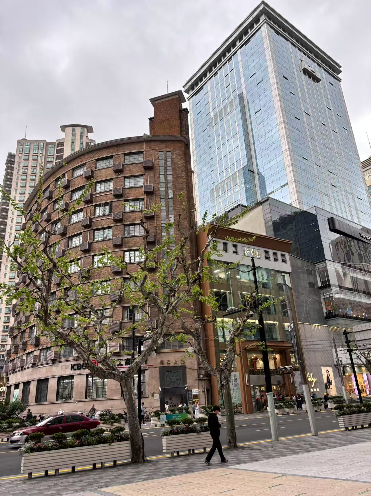
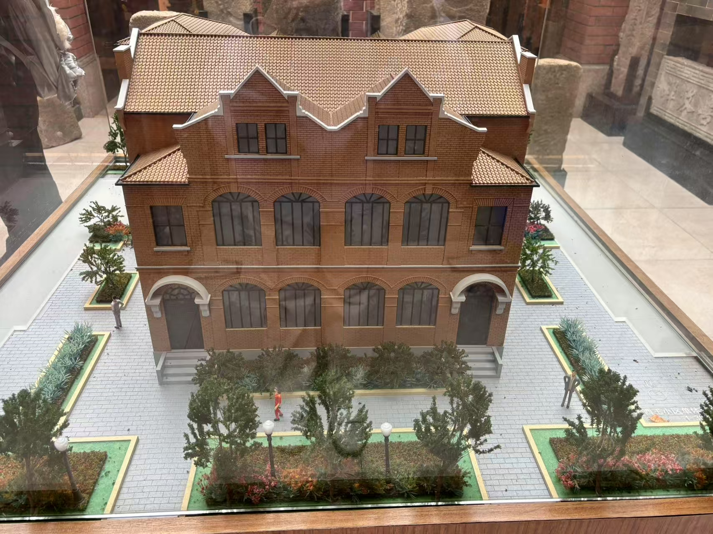
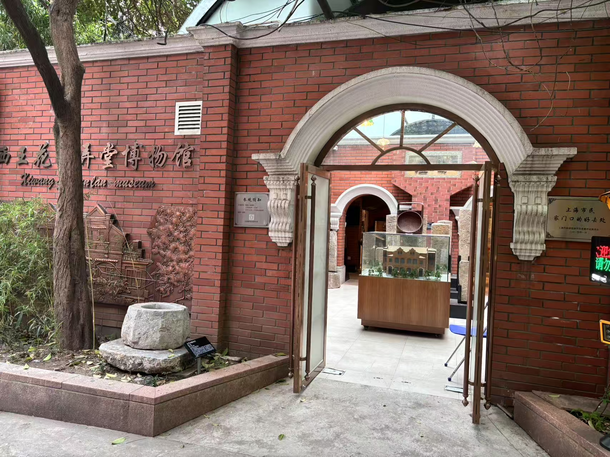

在南京西路附近，我找到了上海最特别的拆迁记忆博物馆
老上海故事会
发布时间：2025-05-03 17:35
浏览次数：108次
衡量一座城市的文明程度，就看它如何对待自己的历史。在寸土寸金的南京西路商圈背后，奉贤路上的西王小区默默守护着一段110年的城市记忆。这个建于清末的明式外廊建筑群，藏着上海最特别的弄堂博物馆之一。
·拆迁废墟里“抢救”回来的宝贝：展出的界碑、门匾，都是民间爱好者从南市老城厢拆迁现场“救下”的历史碎片
·消失的“城市身份证”：这些本该流落民间或深藏库房的文物，终于有了专属展示空间
·建筑本身就是展品：不算石库门，而是罕见的明式外廊建筑，由程家开发于清末
站在这些带着岁月痕迹的界碑前，突然觉得——每一块石头，都在讲述着上海滩的土地故事。
这就在我公司附近，下次找个时间过去看看，小区门口有些有趣的雕塑
在我的博物馆list里，请问这个需要预约吗？
真的好喜欢这种城市边角的“微型博物馆”，每一块旧石头都像是个碎片故事。
有点像小时候看到外婆家墙角的石碑，结果一查真的是老界碑！
推荐大家看看展馆对“租界地契碑”的整理，那块“公董局界址”保存得非常完整。
小馆子虽然不起眼，但比起那些商业化的大博物馆，这里更有“城市肌理”的味道。